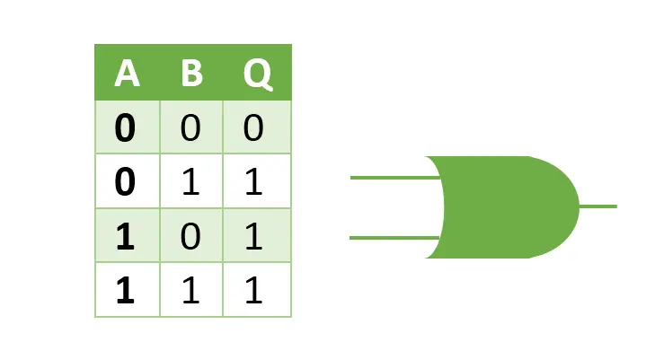

Los circuitos lógicos son fundamentales en el campo de la electrónica digital y la computación. Se utilizan para procesar información binaria, es decir, datos representados por valores de 0 y 1, los circuitos lógicos se construyen utilizando puertas lógicas, que son dispositivos electrónicos que realizan operaciones lógicas básicas sobre una o más señales de entrada para producir una señal de salida.
Tipos de Puertas Lógicas
AND (Y)
Tabla de Verdad:

Función: Produce una salida de 1 solo si todas las entradas son 1.
OR (O)
Tabla de verdad
Función: Produce una salida de 1 si al menos una de las entradas es 1.
NOT (NO)
Tabla de verdad

NAND (NO Y)
Función: Produce una salida de 0 solo si todas las entradas son 1.
Tabla de verdad

NOR
Función: Produce una salida de 1 si las entradas son 0.
Tabla de verdad
XOR Exclusivo
Función: Produce una salida de 1 si las entradas son diferentes.
Tabla de verdad

XNOR (NO O Exclusivo)
Función: Produce una salida de 1 si las entradas son iguales.
Tabla de verdad

Aplicaciones de los Circuitos Lógicos
Los circuitos lógicos son utilizados en una amplia variedad de aplicaciones en la electrónica y la computación:
Computadoras y Microprocesadores: Los circuitos lógicos son la base de las operaciones aritméticas y de control en las unidades centrales de procesamiento (CPU).
Sistemas de Control Digital: En la automatización industrial, los circuitos lógicos controlan máquinas y procesos.
Electrónica de Consumo: Dispositivos como televisores, teléfonos móviles y electrodomésticos utilizan circuitos lógicos para su funcionamiento interno.
Circuitos Integrados: Los chips de memoria, procesadores y otros componentes electrónicos están compuestos de circuitos lógicos.
Redes Digitales: En la comunicación digital, los circuitos lógicos procesan y transmiten datos de manera eficiente y precisa.